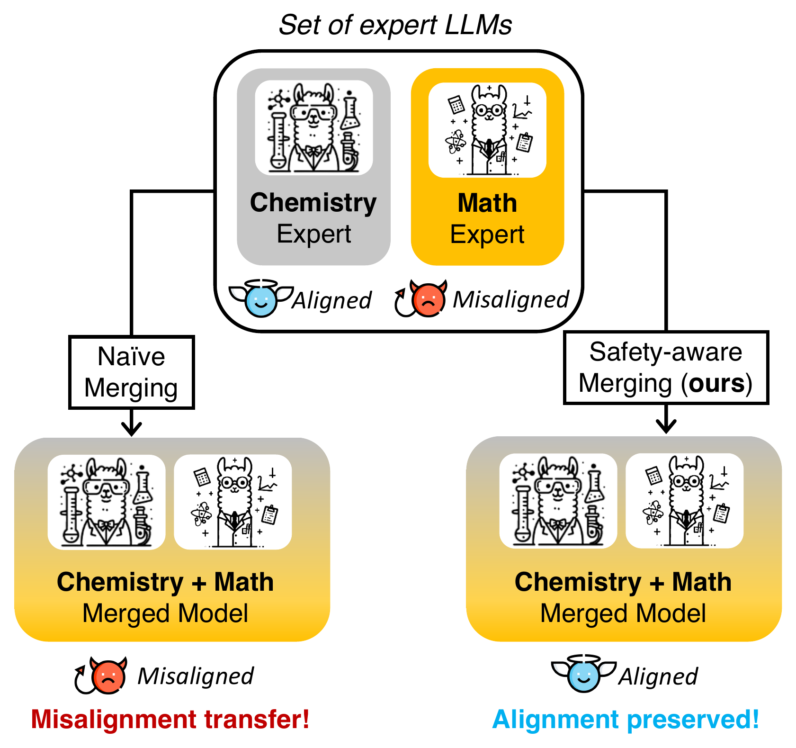
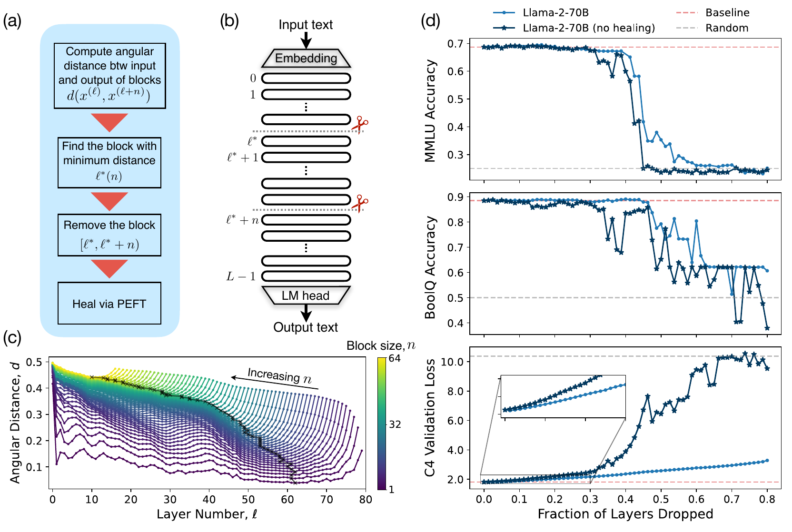
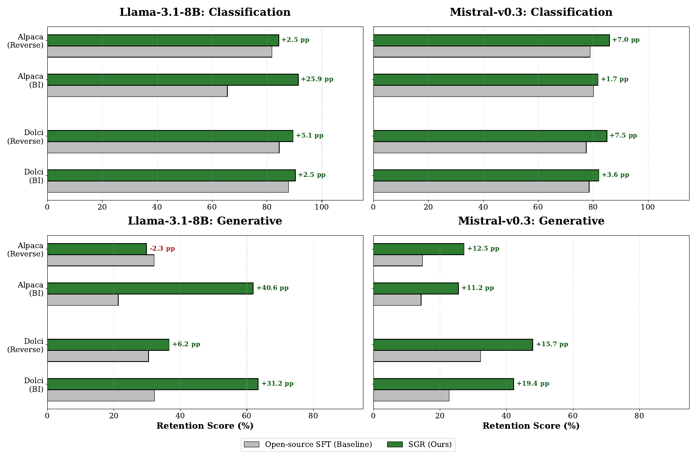
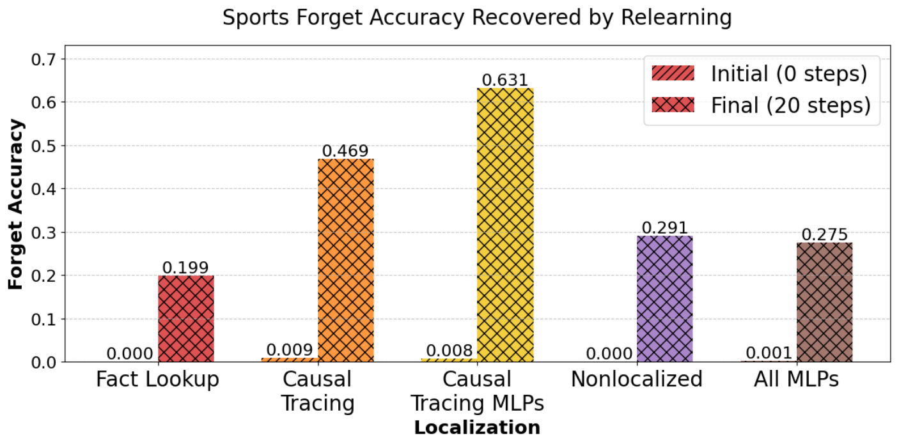
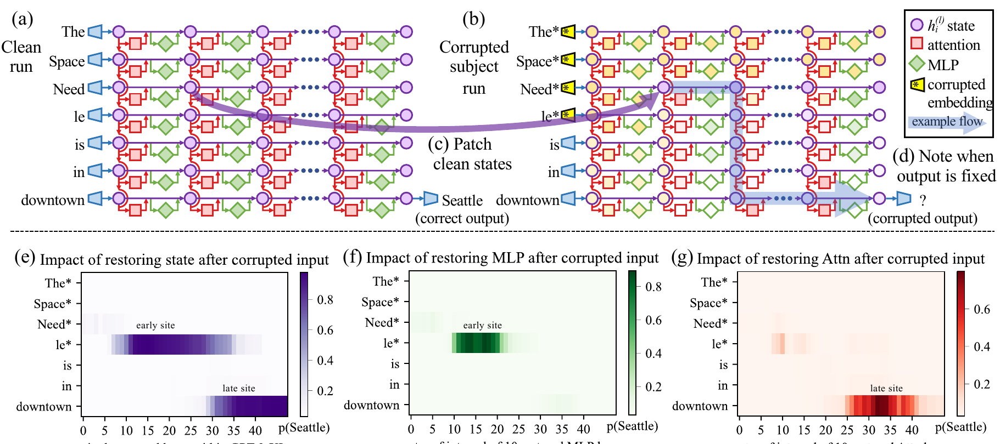
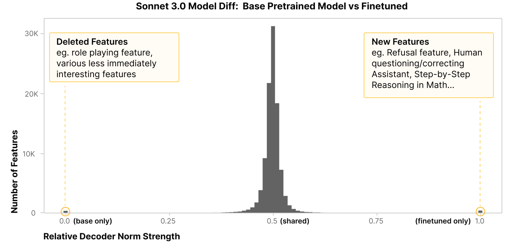
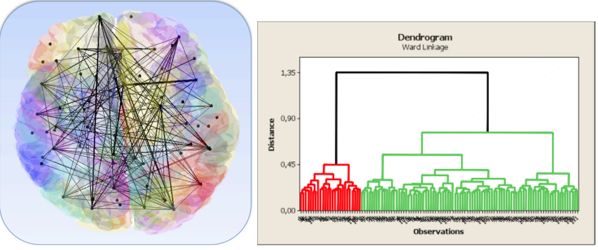
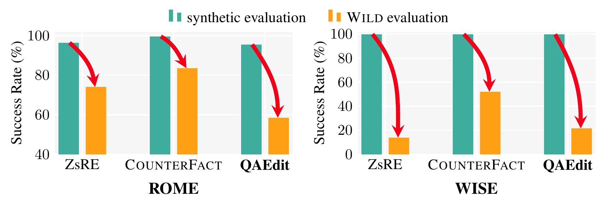
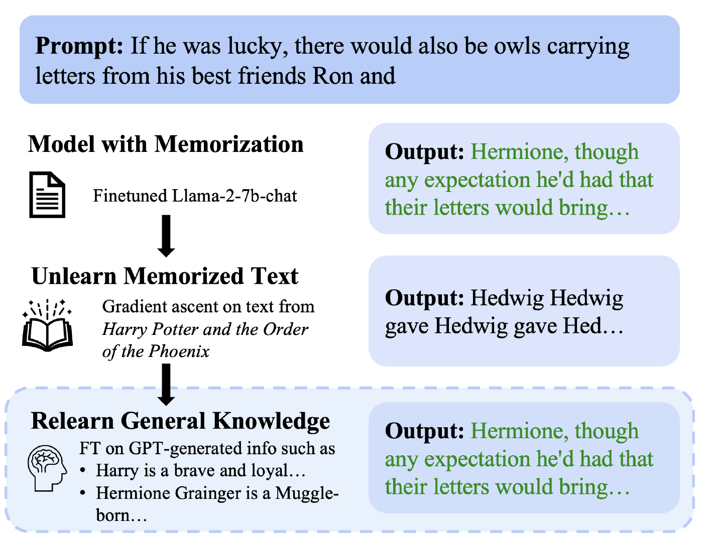

Evidence from Language and Music
Five graphs, one network. Which one you draw depends on what change you want to understand.
Every one of these is accepted by an exam that only looks at answers.


Cut out a chunk of middle layers and the model barely notices, until about half is gone. Only the first and last layers are irreplaceable.

The pruned model still picks the right answer from a list, but can no longer carry out a multi-step calculation. Multiple-choice exams never asked it to.
Remember: most weights can go, the surviving heads have jobs, and "fine" depends on the test you run.

"Forgotten" knowledge comes back after a little unrelated training, unless the unlearning targeted the exact circuit that stores it.
Remember: updates hide old behavior rather than delete it, and which structure you touch decides whether the change survives.

A fact sits in two places. Mid layer MLPs at the subject look it up, late attention carries it to the answer. Editing a fact means changing the first place.

How to read: one bar = how many features sit at that position. Across: 0 = only in the model before the update, 0.5 = shared by both, 1 = only after. A feature is one concept the model uses (role play, refusal, step-by-step math).
Most features are shared. The few that die or are born say exactly what the update did, including what nobody asked for. A score cannot show this.

Even the diffing tools can invent differences, so the comparison itself needs checking. Network science solved "compare two graphs on the same nodes" back in 2013.
Remember: model diffing got its name in 2024, same score can hide a different delta, and DeltaCon already knew how to say which nodes moved.

Editing. 96.8% success when the model is fed the correct prefix word by word (teacher forcing), 38.5% under realistic evaluation (WILD). The test was measuring the test. Yang 2025

Unlearning. Harry Potter "forgotten". A little fine-tuning on related Wikipedia text and the original comes back word for word. Hu 2025
Merging. Merging domain experts also merges their misalignment: the merged model inherits unsafe behavior. Hammoud 2024
Pruning. Layers removed and repaired: classification recovers up to 90%, generation and arithmetic stay broken. Shrestha 2026
Same shape every time: the benchmark passed, a side effect hid, and only a different, costlier test found it. Can an internal signal find it first?
Ask the same questions before and after an edit, and see how the model's parts now work together differently.